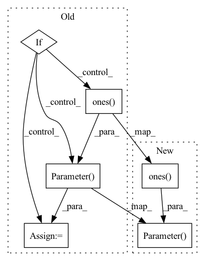

Pattern ID :1079

Before Change
param_shape = (1, num_features, 1, 1)
self.weight = nn.Parameter(torch.ones(param_shape), requires_grad=True)
self.bias = nn.Parameter(torch.zeros(param_shape), requires_grad=True)
if apply_act:
self.v = nn.Parameter(torch.ones(param_shape), requires_grad=True)
self.reset_parameters()
def reset_parameters(self):
nn.init.ones_(self.weight)
After Change
self.eps = eps
self.weight = nn.Parameter(torch.ones(num_features), requires_grad=True)
self.bias = nn.Parameter(torch.zeros(num_features), requires_grad=True)
self.v = nn.Parameter(torch.ones(num_features), requires_grad=True) if apply_act else None
self.reset_parameters()
def reset_parameters(self):
In pattern: SUPERPATTERN
Frequency: 3
Non-data size: 6
Instances
Fragment ID: 3235715
Project Name: feng-lab/pytorch-image-models
Commit Name: 93cc08fdc5a3f6716c183150b8370621788a13f0
Time: 2021-11-20
Author: rwightman@gmail.com
File Name: timm/models/layers/evo_norm.py
M Class Name: EvoNormSample2d
N Class Name: EvoNormSample2d
M Method Name: __init__(6)
N Method Name: __init__(6)
M Parent Class: nn.Module
N Parent Class: nn.Module
M File Name: timm/models/layers/evo_norm.py
N File Name: timm/models/layers/evo_norm.py
M Start Line: 63
M End Line: 68
N Start Line: 64
N End Line: 64
'>
Before Change
param_shape = (1, num_features, 1, 1)
self.weight = nn.Parameter(torch.ones(param_shape), requires_grad=True)
self.bias = nn.Parameter(torch.zeros(param_shape), requires_grad=True)
if apply_act:
self.v = nn.Parameter(torch.ones(param_shape), requires_grad=True)
self.register_buffer("running_var", torch.ones(1, num_features, 1, 1))
self.reset_parameters()
def reset_parameters(self):
After Change
self.eps = eps
self.weight = nn.Parameter(torch.ones(num_features), requires_grad=True)
self.bias = nn.Parameter(torch.zeros(num_features), requires_grad=True)
self.v = nn.Parameter(torch.ones(num_features), requires_grad=True) if apply_act else None
self.register_buffer("running_var", torch.ones(num_features))
self.reset_parameters()
'>
Fragment ID: 3235716
Project Name: feng-lab/pytorch-image-models
Commit Name: 93cc08fdc5a3f6716c183150b8370621788a13f0
Time: 2021-11-20
Author: rwightman@gmail.com
File Name: timm/models/layers/evo_norm.py
M Class Name: EvoNormBatch2d
N Class Name: EvoNormBatch2d
M Method Name: __init__(6)
N Method Name: __init__(6)
M Parent Class: nn.Module
N Parent Class: nn.Module
M File Name: timm/models/layers/evo_norm.py
N File Name: timm/models/layers/evo_norm.py
M Start Line: 24
M End Line: 29
N Start Line: 24
N End Line: 27
'>
Before Change
assert self.gate_type == "features" or self.gate_type == "heads", f"Gate type must be "features" or "heads"!"
// Initialize gate to 1
if self.gate_type == "features":
self.scale = nn.Parameter(torch.ones((input_shape[-1],)), requires_grad=True).view(1, 1, input_shape[-1])
elif self.gate_type == "heads":
self.scale = nn.Parameter(torch.ones((input_shape[1],)), requires_grad=True).view(1, input_shape[1], 1, 1)
self.scale = self.scale.repeat(1, 1, 1, input_shape[-1])
// Prepare streams info
After Change
num_params = self.input_shape[self.dim_to_scale]
// Initialize gate to 1
self.scale = nn.Parameter(torch.ones(num_params), requires_grad=True)
// Built einsum input strings
self.einsum_in_1 = "abcdef"
self.einsum_in_1 = self.einsum_in_1[:len(self.input_shape)]
'>
Fragment ID: 3235718
Project Name: antofuller/configaformers
Commit Name: 587753fa0f50da143bb3a3ad4da1d65e3ee72c60
Time: 2021-11-11
Author: afuller187187@gmail.com
File Name: norm_module.py
M Class Name: Gate
N Class Name: Gate
M Method Name: __init__(3)
N Method Name: __init__(3)
M Parent Class: nn.Module
N Parent Class: nn.Module
M File Name: norm_module.py
N File Name: norm_module.py
M Start Line: 106
M End Line: 123
N Start Line: 106
N End Line: 129